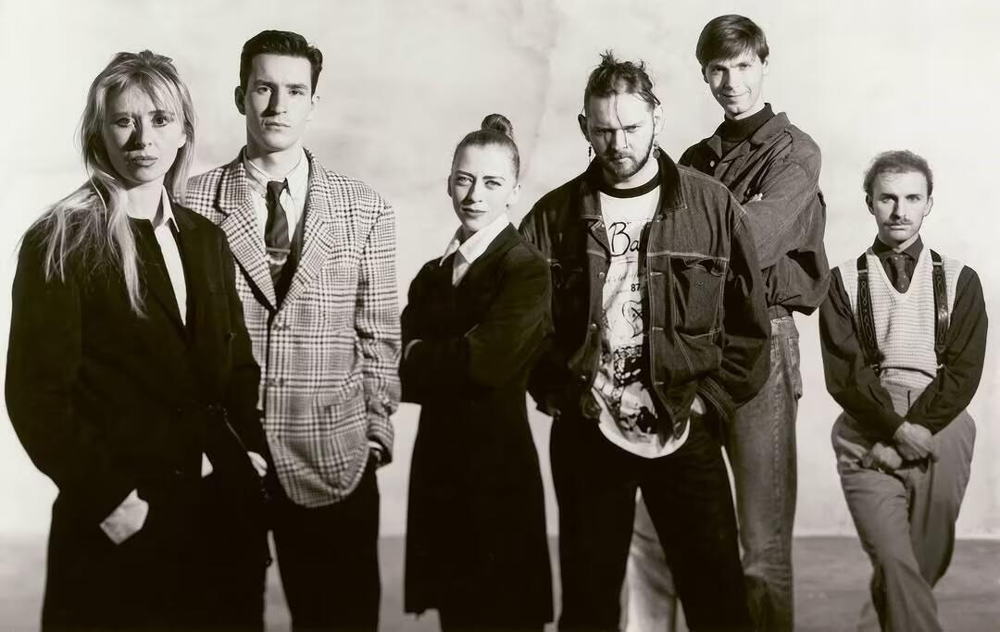

The Met Gala 2026 orchestrates its most ambitious convergence yet. Fashion and museum culture collide as The Metropolitan Museum of Art unveils a new 12,000 square foot Costume Institute gallery. The space marks a watershed moment for how institutions present the history of dress. It also marks the grandest platform for this year's thematic exhibition: Costume Art. The curatorial lens weaves together the Costume Institute's archive with depictions of clothing across The Met's vast collection. Beyoncé, Nicole Kidman, and Venus Williams serve as co-chairs. The message is clear. Fashion is not decoration. Fashion is art history itself.
This convergence extends far beyond Fifth Avenue. The fashion exhibition calendar of 2026 reads like a museum retrospective unto itself. Edward Enninful has curated an exhibition dedicated to the 1990s at Tate Britain. The show arrives as London reasserts itself as a creative capital. The decade receives full examination. Minimalism. Maximalism. The rise of supermodels. All of it returns through the lens of contemporary curatorial rigor.

The Victoria and Albert Museum mounts a vast retrospective dedicated to Schiaparelli. The exhibition spans the house's entire creative output. It presents the work not as discrete collections but as a continuous visual philosophy. Surrealism meets couture. Fantasy meets structure. The V&A positions Schiaparelli alongside the lineage of haute couture. This is fashion history written through objects.
Antwerp gets its moment. The Museum of Modern Art Antwerp (MoMu) opens the first major exhibition dedicated to the Antwerp Six. Forty years have passed since their landmark 1986 London show revolutionized fashion. Ann Demeulemeester, Dirk Bikkembergs, Dries Van Noten, Dirk Van Saene, Walter Van Beirendonck, and Margiela defined an era. Now MoMu presents their legacy not as nostalgia but as continued relevance. The Antwerp Six shaped everything that followed. The exhibition proves this through primary sources and contemporary context.

In Rome, Valentino announces a bold shift. Alessandro Michele takes the helm of the storied house. His first collection debuts in Rome rather than Paris. The decision signals creative autonomy. It also signals respect for the brand's Italian heritage. Michele moves from Gucci to a house with centuries of archive. The collection arrives as an exhibition in itself. Fashion houses increasingly function as museums of their own practice.
These exhibitions converge on a single point. Fashion institutions have become central to how culture defines itself. The museum is no longer a repository of the past. The museum is the stage where fashion's present unfolds. The Met Gala 2026 crystallizes this shift. Costume becomes art. Art becomes fashion. The line between them dissolves entirely.